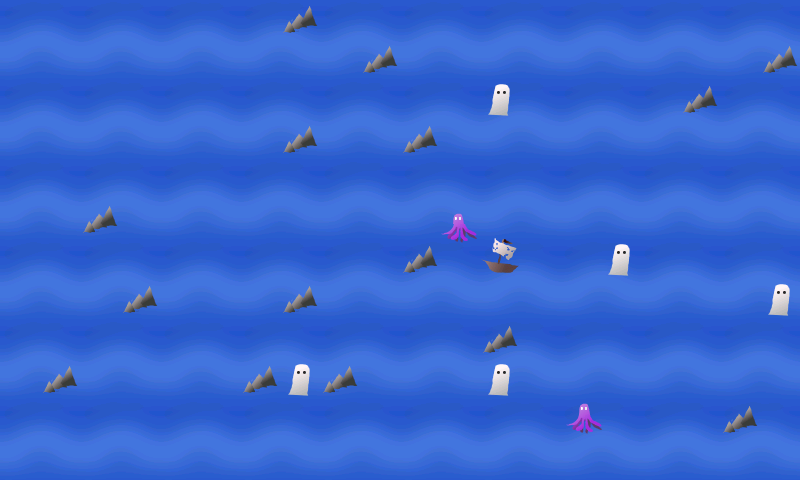

Ghosts Overboard Ghosts Overboard
|
| Home
| Screenshots | Changelog | Support
& Project | Download | Sources
|
Ghosts
Overboard is a game for maemo5 (Nokia N900) and 'Meego 1.2 Harmattan'
(Nokia N9 & Nokia N950) . The latest release is versiom 0.4.0 with
highscore and another levelset with five levels. Also the vibration
effects of the Harmattan version are now working.
|

|
The story & playing
A group of ghosts was sailing with their ghost ship when a storm hit
them. The ghosts fell overboard and were scattered across the nearby
waters. It is now your task to rescue them. The ghost ship
is controlled by tilting the device. Pick up the ghosts and avoid the
rocks and octopuses. If the ship hits a rock or an octopus, all
ghosts in it will fall
overboard again. Tap the screen to pause and show the menu.
|
©
Heli Hyvättinen 2011. Ghosts Overboard is free software under GNU
General Public License 2.
|